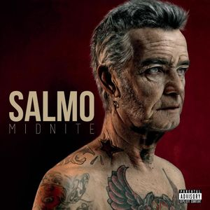
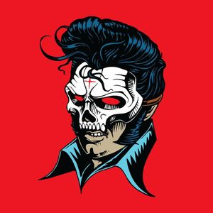

MY TOP THREE CD
The Island Chainsaw Massacre
Salmo ci regala delle buone rime, un buon flow. Tecnicamente non è perfetto, ma gli manca solo un filo di esperienza sulle spalle, per quanto riguarda il rispetto totale e perfetto delle metriche. Ottima personalità, contenuti vari, anche se tendenti ad un’introspezione cupa. Nel complesso, però piace e “funziona”.

Midnite
Salmo ci regala delle buone rime, un buon flow. Tecnicamente non è perfetto, ma gli manca solo un filo di esperienza sulle spalle, per quanto riguarda il rispetto totale e perfetto delle metriche. Ottima personalità, contenuti vari, anche se tendenti ad un’introspezione cupa. Nel complesso, però piace e “funziona”.

Hellvisback
Salmo ci regala delle buone rime, un buon flow. Tecnicamente non è perfetto, ma gli manca solo un filo di esperienza sulle spalle, per quanto riguarda il rispetto totale e perfetto delle metriche. Ottima personalità, contenuti vari, anche se tendenti ad un’introspezione cupa. Nel complesso, però piace e “funziona”.